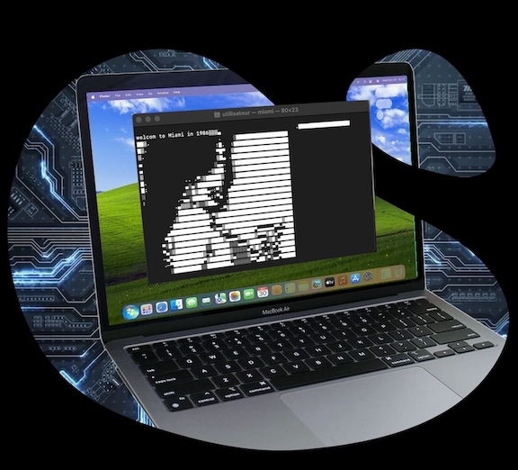

Dans les années 1980, vous êtes journaliste et êtes invité dans un chateau au fin fond de l'Angleterre. Ce château appartient à un certain Sir Greenday, un aristocrate anglais trés connu dans son pays, aimé de la reine d'Angleterre. Comme toujours dans ces châteaux qui hantent les légendes britanique, un drame est sur le point de se dérouler... Cependant, vous avez le choix...
A vous de choisir votre experience : par le rire ? en vous plongeant dans une enquête tel Phantomas aux cotés de Louis de Funès ou
alors en compagnie des sombres polars de Stephen King ? à vous de faire votre choix dans ce jeu de sénarios.

Souvenez-vous de ce jeu dans lequel vous contrôlez ce personnage nommé Tommy accompagné de son toxico d'avocat paranoïaque, Ken. Ce dernier lui annonce aprés un deal qui a échoué "I poke my head out of the gutter for one freakin' second and fate shovels shit in my face!". Et si ce deal avait été mieux préparé ? Et si on pouvait changer le passé ? Aller, c'est partit !
Après s'être envolés pour Miami, Tommy, Ken et les gangsters, Harry et Lee, sont dans la mercedes class S blanche de Ken. Ils sont conduits jusqu'à la famille Vance Crime pour conclure un accord lié à la drogue. Les 2 frères Vance arrivent en hélicoptère et commencent l'affaire. Cependant...
Des balles sont tirées en direction du groupe qui se trouve alors en plein deal. Tommy, qui était resté à l'arrière de la berline de Ken, armé d'un fusil d'assaut, tire sur les assaillants. Harry et Lee retrouvent Ken et Tommy dans la voiture avec l'argent mais les 2 frères Lance partent à bord de leur hélicoptère avec la poudre blanche. Vous avez bien lu ! Dans cette nouvelle version de l'histoire, Tommy n'a pas perdu l'argent mais il n'a pas non plus pu remplir sa mission. Aidez-le à trouver qui a esssayé de les tuer. Ainsi, il pourra remplir sa mission et créer une vraie tête de pont dans cette ville.

C'est un projet de jeu en 3D sur la base du moteur graphique Blender. Ca ne sera pas une simple copie du jeu, ni un mode fantaisie comme Duke Nukem (Même si ce jeu est dans mon coeur). Ce sera la base d'un jeu retro Doom avec une autre histoire comme Silente Hill ou Alone In The Dark
Un peu de patience